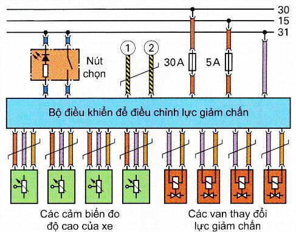
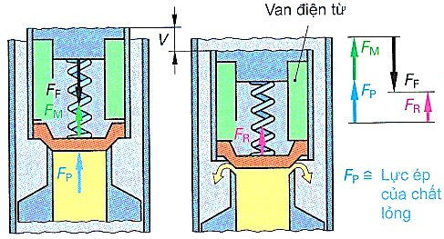
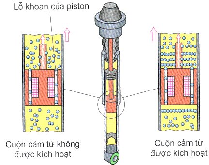

Với sự hỗ trợ của bộ điều chỉnh lực giảm chấn điện tử, đặc tính của lực giảm chấn có thể biến đổi vô cấp tùy theo sự điều khiển của người lái và tình huống chạy xe với các đặc điểm:
- Tăng cường độ an toàn chuyển động cho xe nhờ độ bám đường của bánh xe được tốt hơn;
- Chuyển động lắc ít và độ nghiêng của thân vỏ và khung sườn xe nhỏ khi xe chạy trong vòng cua;
- Cho phép lựa chọn điều chỉnh lực giảm chấn cho chế độ chạy thể thao hay êm dịu qua nút bấm.
Hệ thống này cơ bản gồm có:
+ Bộ giảm chấn với độ giảm chấn có thể điều chỉnh bằng điện tử;
+ Cảm biến đo góc đánh lái, chuyển động của bánh xe và gia tốc ngang của thân vỏ xe;
+ Cảm biến đo tốc độ xe;
+ Cảm biến đo góc để đo độ cao của xe ở mỗi bên trục bánh;
+ Bộ điều khiển để điều chỉnh lực giảm chấn.
Nguyên lý hoạt động: Lực giảm chấn được thích ứng cho từng chuyển động nén lại và giãn ra của bộ đàn hồi theo từng tình trạng chuyển động của xe. Sự điều chỉnh được thực hiện thông qua việc thay đổi cường độ dòng điện kích hoạt cho van điện từ của bộ giảm chấn (Hình 11.48). Tùy theo thông tin của các cảm biến, bộ điều khiển sẽ tính toán dòng điện cần thiết cho van điện từ của mỗi một bộ giảm chấn. Lực giảm chấn có thể thay đổi trong một phạm vi rộng với thời gian từ 2 ms đến 4 ms.

Hình 11.48. Sơ đồ nối mạch của bộ giảm chấn điện tử
Bộ giảm chấn điện tử có các kiểu sau đây:
Bộ giảm chấn khí nén ống kép với van tỷ lệ (Hình 11.49): Lực giảm chấn được điều chỉnh thông qua việc cung cấp dòng điện kích hoạt cho van điện từ. Nếu cần một lực giảm chấn lớn thì lực cản dòng chảy của dầu phải tăng lên (bên trái). Khi cuộn cảm được kích điện, van tỷ lệ sẽ được di chuyển ngược chiều với lực của bộ đàn hồi và tiết diện lỗ điều tiết lớn lên (bên phải). Lực giảm chấn yếu đi. Tùy theo dòng điện cung cấp cho cuộn cảm từ, tiết diện lỗ điều tiết sẽ được điều chỉnh vô cấp.

Hình 11.49. Giảm chấn với van tỷ lệ
Bộ giảm chấn khí nén ống đơn với hiệu ứng giảm chấn từ-lưu biến (Magnetic-Ride, Hình 11.50). Sự điều chỉnh lực giảm chấn dựa vào hiệu ứng từ-lưu biến. Các hạt sắt nhỏ với đường kính từ 3 µm đến 10 μm được trộn lẫn trong dầu giảm chấn (dầu tổng hợp). Nếu cuộn cảm từ không được kích hoạt bằng điện, các hạt từ tính nằm hỗn độn trong dầu giảm chấn. Khi pit tông chuyển động, các hạt sắt riêng lẻ cùng với dầu được đẩy qua các lỗ khoan của pit tông không tạo sức cản lớn.
Khi cuộn cảm từ chưa được cấp điện, các hạt sắt nhỏ phân tán tự do trong dầu giảm chấn. Lúc này dầu vẫn có độ nhớt thấp, dòng dầu dễ dàng chảy qua các lỗ khoan trên piston, nên lực cản giảm chấn nhỏ giúp xe êm ái hơn.
Ngược lại, khi cuộn cảm từ được kích hoạt bằng điện, từ trường sinh ra làm các hạt sắt nhanh chóng sắp xếp thành chuỗi liên kết dọc theo đường sức từ. Sự sắp xếp này khiến dầu giảm chấn trở nên đặc hơn, tức độ nhớt tăng lên rõ rệt. Do đó, dòng dầu gặp nhiều cản trở khi đi qua lỗ khoan piston, lực cản tăng tạo lực giảm chấn lớn, giúp xe ổn định và giảm dao động mạnh hơn.

Hình 11.50. Bộ giảm chấn với hiệu ứng từ-lưu biến
Giải thích sơ đồ minh họa nguyên lý làm việc của pit tông và dầu giảm chấn:
- Bên trái: Cuộn cảm từ chưa kích hoạt, dầu loãng, lực giảm chấn nhỏ.
- Bên phải: Cuộn cảm từ được kích hoạt, dầu đặc hơn, lực giảm chấn lớn.